Directory
Biomedical Engineering
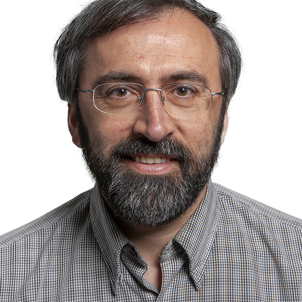
Sergei AdamovichProfessorNeurorehabilitationvirtual realityroboticsBrain Imaging and Stimulation Tara AlvarezDistinguished ProfessorEye movement controlfunctional MRIvergenceadaptive controlGhaith AndrowisAdjunctWearable robotics and rehabilitation technologies (R&D)Abdullah AqeelAdjunctTreena ArinzehAffiliate FacultyTissue Engineering and Active bioMaterials (TEAM)
Tara AlvarezDistinguished ProfessorEye movement controlfunctional MRIvergenceadaptive controlGhaith AndrowisAdjunctWearable robotics and rehabilitation technologies (R&D)Abdullah AqeelAdjunctTreena ArinzehAffiliate FacultyTissue Engineering and Active bioMaterials (TEAM)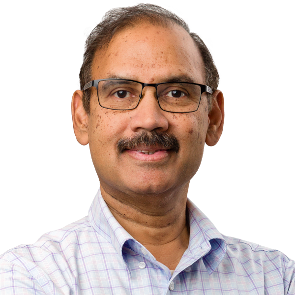
Bharat BiswalDistinguished ProfessorBrain ImagingBrain ConnectivityfNIRSMRI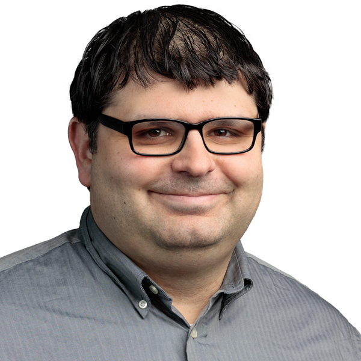
Alexander BuffoneAssistant ProfessorGlycobiologyGenetic EngineeringMechanobiologyCellular Motion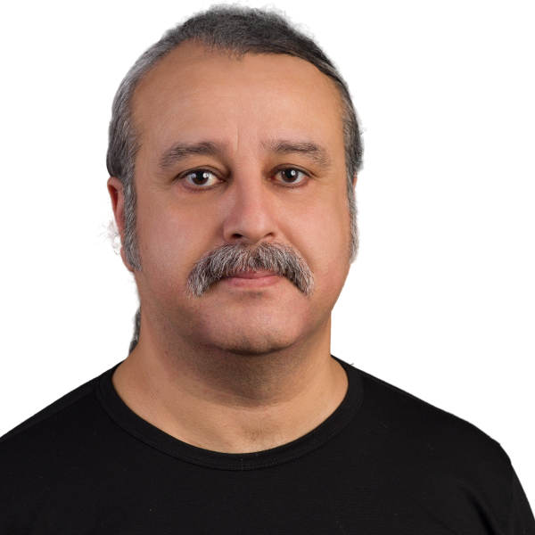
Volkan CecenUniversity LecturerLi-Sulfur batteriesAramid nanofibers (ANFs)ANF compositesRajarshi ChattarajAssistant ProfessorUltrasoundBrain InjuryProtein EngineeringInfectious diseases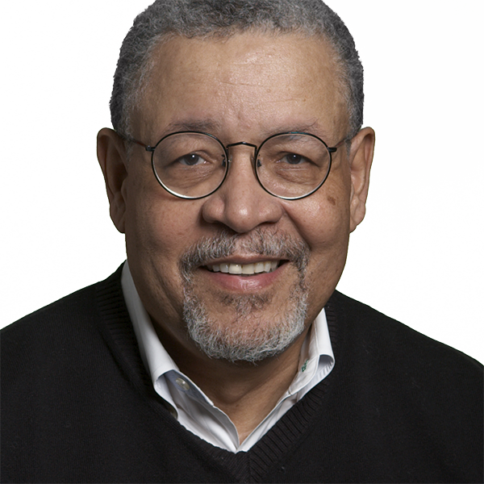
George CollinsAdjunct InstructorBiomaterialsPharmaceuticsThermal AnalysisSolid Relaxations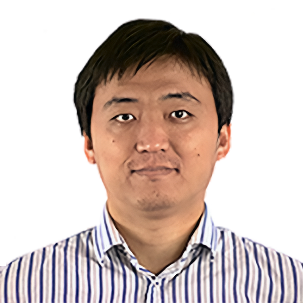
Xin DiAssistant Research ProfessorBrain connectivity and brain network organizationsTask connectomeFunctional neuroimagingBrain Connectivity Jonathan GrasmanAssistant ProfessorBiomaterialsregenerative medicinetissue engineering
Jonathan GrasmanAssistant ProfessorBiomaterialsregenerative medicinetissue engineering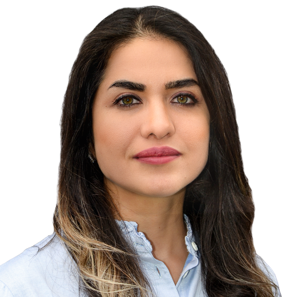
Maryam HajfathalianAssistant ProfessorNanomaterialsImagingInfectious diseasesSensing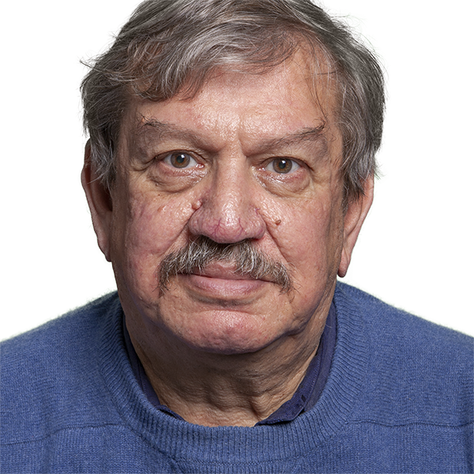
Michael JaffeAdjunct InstructorBiomaterialsMaterials SciencePhysical Chemistry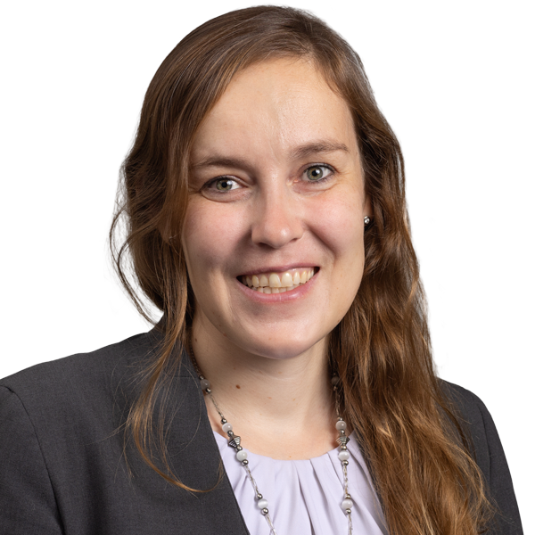
Elisa KallioniemiAssistant ProfessorBrain stimulationneural engineeringbiomarkersneural plasticity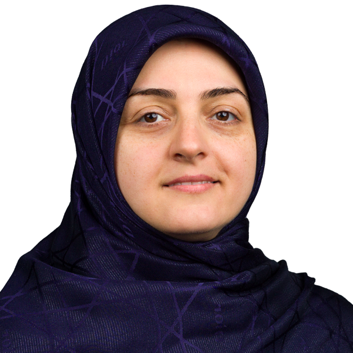
Ghazaleh KhayatUniversity Lecturer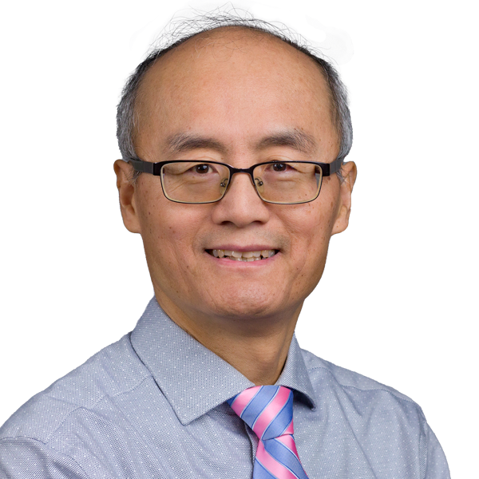
Zhifeng KouAssociate ProfessorNatalie KozanAdjunct InstructorBiomaterialsBiomedical engineeringtissue engineering Eunjung LeeAssociate ProfessorBiomedical engineering
Eunjung LeeAssociate ProfessorBiomedical engineering Xiaobo LiProfessorNeuroimagingMachine learningBrain Disorders
Xiaobo LiProfessorNeuroimagingMachine learningBrain Disorders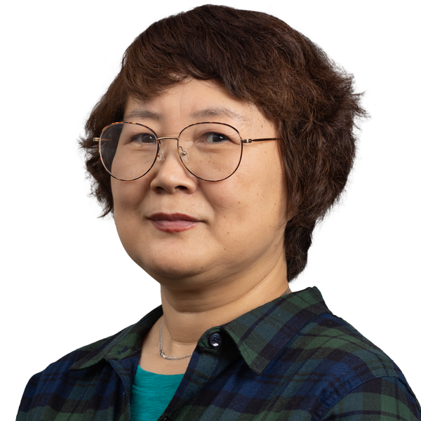
Ying LiAssistant Research ProfessorAmir MiriAssociate ProfessorBioprintingOrgans-on-ChipsMicrofluidicsHandheld DevicesPaul MoodeyAdjunct Instructor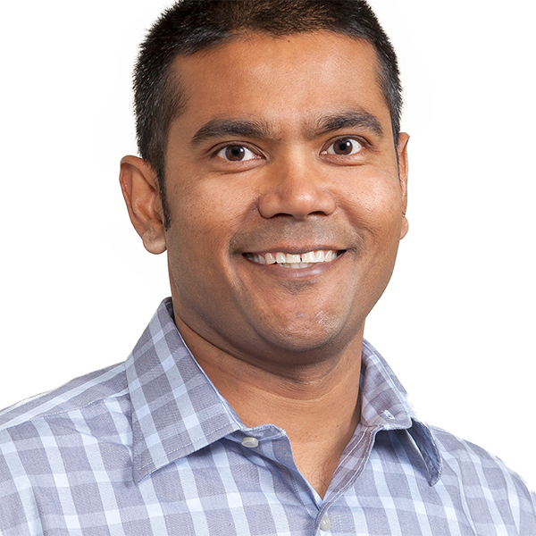
Saikat PalAssociate ProfessorHuman movementRehabilitation roboticsComputational methodsbiomechanics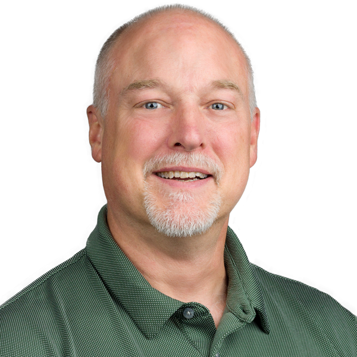
Bryan PfisterProfessortraumatic brain injuryNervous System Development and Regeneration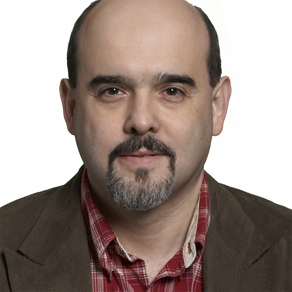
Mesut SahinProfessorNeuromodulation of the Cerebellum using Focused Ultrasound and tACSStimulation of Neural Tissue with Optically Activated MicroStimulatorsCarbon Fiber Electrode Array and BundlesSpinal Cord - Computer Interface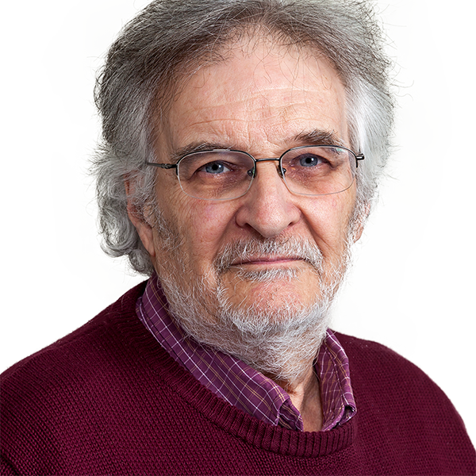
Joel SchesserSenior University LecturerJoshua SimonAdjunct Instructortissue engineeringbone healingtissue scaffolds Jongsang SonAssistant ProfessorNeuromuscular adaptationbiomechanicsRehabilitation engineeringArtificial Intelligence
Jongsang SonAssistant ProfessorNeuromuscular adaptationbiomechanicsRehabilitation engineeringArtificial Intelligence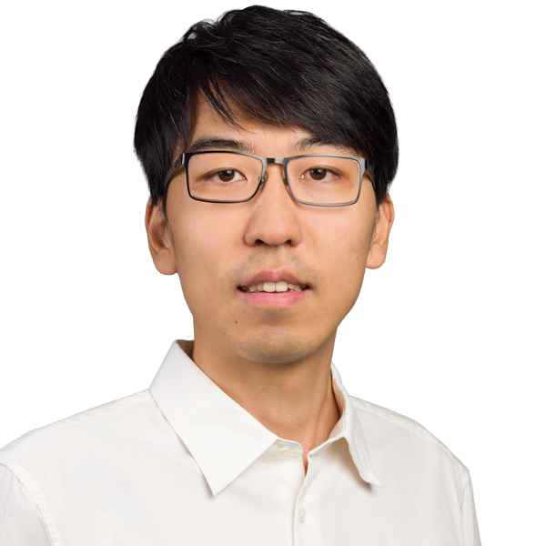
Lin ZhaoAssistant ProfessorBrain-inspired AIMedical Image AnalysisArtificial General Intelligence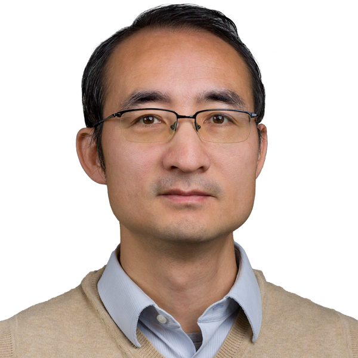
Xianlian ZhouAssociate Professorcomputational biomechanics and bioengineeringDigital human modelingpersonalized medicinespecifically including musculoskeletal biomechanicsProfessors
Tara AlvarezDistinguished ProfessorEye movement controlfunctional MRIvergenceadaptive controlBharat BiswalDistinguished ProfessorBrain ImagingBrain ConnectivityfNIRSMRISergei AdamovichProfessorNeurorehabilitationvirtual realityroboticsBrain Imaging and StimulationXiaobo LiProfessorNeuroimagingMachine learningBrain DisordersMesut SahinProfessorNeuromodulation of the Cerebellum using Focused Ultrasound and tACSStimulation of Neural Tissue with Optically Activated MicroStimulatorsCarbon Fiber Electrode Array and BundlesSpinal Cord - Computer InterfaceAssociate Professors
Zhifeng KouAssociate ProfessorEunjung LeeAssociate ProfessorBiomedical engineeringAmir MiriAssociate ProfessorBioprintingOrgans-on-ChipsMicrofluidicsHandheld DevicesSaikat PalAssociate ProfessorHuman movementRehabilitation roboticsComputational methodsbiomechanicsXianlian ZhouAssociate Professorcomputational biomechanics and bioengineeringDigital human modelingpersonalized medicinespecifically including musculoskeletal biomechanicsAssistant Professors
Alexander BuffoneAssistant ProfessorGlycobiologyGenetic EngineeringMechanobiologyCellular MotionRajarshi ChattarajAssistant ProfessorUltrasoundBrain InjuryProtein EngineeringInfectious diseasesXin DiAssistant Research ProfessorBrain connectivity and brain network organizationsTask connectomeFunctional neuroimagingBrain ConnectivityJonathan GrasmanAssistant ProfessorBiomaterialsregenerative medicinetissue engineeringMaryam HajfathalianAssistant ProfessorNanomaterialsImagingInfectious diseasesSensingElisa KallioniemiAssistant ProfessorBrain stimulationneural engineeringbiomarkersneural plasticityYing LiAssistant Research ProfessorJongsang SonAssistant ProfessorNeuromuscular adaptationbiomechanicsRehabilitation engineeringArtificial IntelligenceLin ZhaoAssistant ProfessorBrain-inspired AIMedical Image AnalysisArtificial General IntelligenceSenior Lecturers
Ghaith AndrowisAdjunctWearable robotics and rehabilitation technologies (R&D)Abdullah AqeelAdjunctGeorge CollinsAdjunct InstructorBiomaterialsPharmaceuticsThermal AnalysisSolid RelaxationsMichael JaffeAdjunct InstructorBiomaterialsMaterials SciencePhysical ChemistryNatalie KozanAdjunct InstructorBiomaterialsBiomedical engineeringtissue engineeringPaul MoodeyAdjunct InstructorJoel SchesserSenior University LecturerJoshua SimonAdjunct Instructortissue engineeringbone healingtissue scaffoldsNo faculty match “”.